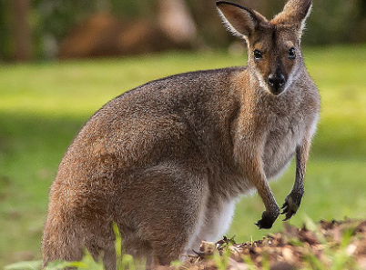
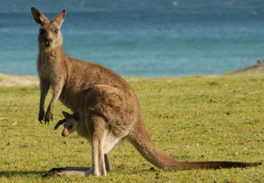

Ils vivent uniquement en Australie. Ce sont des marsupiaux: leurs petits se développent dans une poche située sur le ventre.
 Les grands kangourous, quand ils sont coursés par un chien sauvage, sont capable de faire des bonds extraordinaires, de 4m de heut sur plus de 12 à 14m de longueur et d'atteindre près de 80km/h. Le plus grand des kanourous mesure environ 2m de long et pèse 85kg.